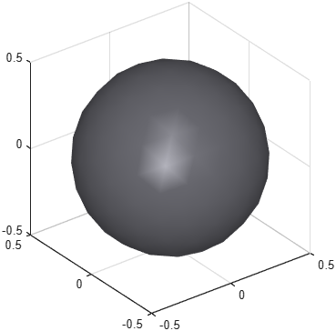

Additional material parameters for shapes
Mix-in class phx.base.ShapeMesh
phx.base.ShapeMesh is a mix-in superclass that adds visual appearance
parameters — surface color, material, style and an optional texture — shared by all
mesh-based shapes. Concrete shapes in the phx.shape.* package combine
it with phx.base.Shape to define both their geometry and their
appearance.
You do not instantiate this class directly. The properties and methods documented here are
available on every phx.shape.* object and are settable as
Name,Value pairs in any shape constructor.
| Property | Type / Default | Description |
|---|---|---|
| Color | [NaN NaN NaN] | Surface color (RGB). NaN assigns the next color from the cyclic palette. |
| Material | "plastic" | Surface material: "unlit", "matte", "plastic", "glossy" or "metal". |
| Style | "smooth" | Surface style: "smooth", "edged", "flat" or "wireframe". |
| ForcePatch | false | Force the use of a patch object for drawing instead of the fast world primitive. |
| Texture | string | Texture image. Setting it loads the image (with alpha, if present) as the surface texture. Accepts either a path to an image file or the name of a built-in texture: "checker", "metal", "tiles" or "wood" (matched case-insensitively). |
| TextureBlend | 1 | Texture blending ratio (0–1) between the texture and the surface color. |
ForcePatch is
true – the shape falls back to a
patch object, which ignores the texture: nothing fails, but the
surface simply shows its Color.
| Function | Description |
|---|---|
| colormapTexture | Generate a surface texture from a matrix of scalar data and a colormap. |
| nextColor | Assign the next color from the cyclic color order to the shape. |
| resetColorOrder | Static. Reset the counter so nextColor starts again from the first color. |
Maps the scalar values in cdata to colors and stores the result as
the surface texture of the shape. cmap is an N×3 matrix of RGB
rows (default parula(10)); cdata is
normalized to the full range of the colormap.
clf; view(3); axis equal; grid on; camlight headlight; b = phx.Body("Shape", {"Sphere", "Diameter", 1, ... "Material", "metal", "Style", "smooth", "Color", [0.7 0.7 0.75]});

Draw the bodies into the axes of a phx.extra.Viewer, otherwise the textures are not rendered:
[~, ax] = phx.extra.Viewer("clear"); crate = phx.shape.Box("Size", 2, "Texture", "wood"); % built-in texture earth = phx.shape.Globe("Diameter", 2, "Texture", "earth.jpg"); % image file phx.Body(ax, "Position", [-2 0 0], "Shape", crate); phx.Body(ax, "Position", [ 2 0 0], "Shape", earth);
Use TextureBlend below 1 to tint a texture with the
Color of the shape – a blend of 0.2–0.5 over
"checker" is a cheap way to make a colored body read as a solid
object while it rotates.